BETA v0.4.2
Hackerboomm hayatımın dijital kısmını oluşturuyor. Küçüklüğümden beridir her yerde kullanmaya devam ettiğim Hackerboomm imzam şu anda projelerimle, medya hesaplarımla, yaptıklarımla, öğrendiklerimle ve paylaştıklarımla gelişen, değişen, üreten devasa bir ekosistem.
Bir kullanıcı adıyla başlayan serüven, üretken konumda bulunan bir markaya, bir ekosisteme evrildi.
Merhaba ben Musa Utku Başıbüyük.
İlkokulda başlayan ufacık bir kıvılcımla teknoloji dünyasına tutulmuş biriyim. Öğrenmeye, düşünmeye, çözmeye ve üretmeye açım. Yeteneklerimi projelerde sergilemek ve projelerden elde ettiğim bilgileri medya mecralarında paylaşmaya istekli bir girişimciyim.
İşte artık tanıyorsunuz.
İlkokuldaki bilgisayar sınıfımızda Scratch kodlamayla başladı Hackerboomm Ekosistemine giden yolum. Blok kodlamanın verdiği hazzı hala unutamıyorum.
Scratch oyunlarımdan birinin proje linki.
Lisede profesyonel dillere adım atmamla Hackerboomm’u ileri seviyeye taşımaya başladım. Yapay zekada yapılan akılalmaz ilerlemelerle de kendimi geliştirme hızımı ve verimimi artıracak işelere imza attım. Yapay zekayı her işime %100 entegre etmektense çalışma mantıklarını anlamaya, prompt geliştirmeye ve YZ araçlarını verimlilik artırıcı birer yardımcı olarak kullanmaya başladım.
Hackerboomm imzası taşıyan logolar tasarladım. Aynı imzayla tescillenmiş projeler geliştirdim.
GitHub projelerim için buraya tıklayın.
Liseden sonra vakit kaybetmeden şu anda içinde bulunduğunuz Ekosistemi inşa etmeye başladım.
En büyük hedeflerim arasında artık benim bir parçam olan Hackerboomm markamı geliştirmek bulunuyor. Şu anki öğrendiğim diller olan HTML ve CSS’in yanına Java, Python, JavaScript (ECMAScript) gibi diller eklemeyi hedefliyorum.
Girişimlerimi hayata geçirmek ve piyasayı tanımak istiyorum. Tüm bunlara ek olarak da öğrendiğim, geliştirdiğim şeyleri insanlara anlatmak veya bazen sadece eğlenmek amacıyla medyaya içerik üreterek paylaşmak istiyorum. Büyük diyebileceğim hedeflerim arasında yapay zekayı tanımak çalışma mantıklarını çözmek ve kendi yapay zeka projelerimi geliştirmek var.